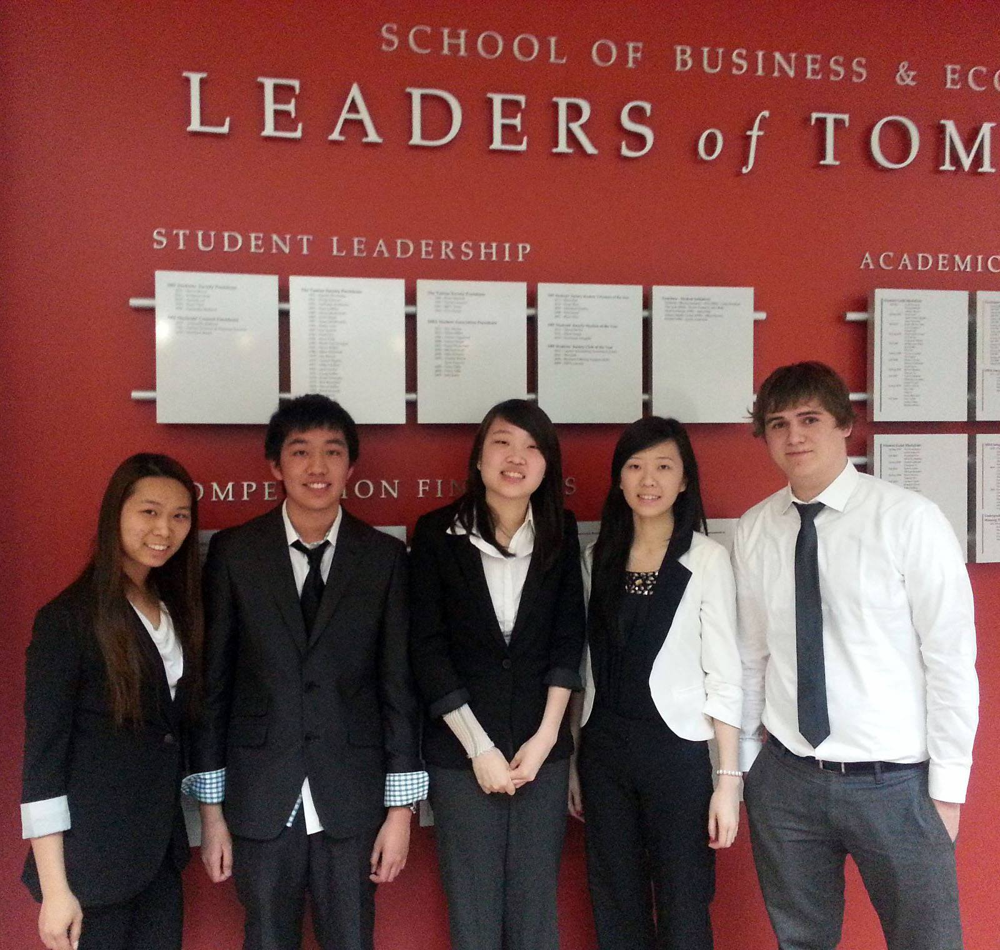

Education
Integrated Case Exercise
ICE is a required project/competition that all third year students in the Wilfrid Laurier Business Admin. program must complete. It involves a real company with an issue that randomized groups of students work together to solve. The competition lasts one week, and by the end, all groups submit final reports and present to the Board of Directors. My team's ability to work together to produce a good quality analysis and solution led us to moving on to semi-finals, leading to an 87% final grade.
 New Venture
New Venture is a project/competition done in first year of the program required of all business students. This project is also done in randomized groups and lasts all year long. I worked with my group over the course of the whole school year developing our New Venture idea, a food and dine in phone application called Tapn'Snack. We handed in multiple reports, from the idea proposal to the final report. We also presented our idea in the form of a pitch at the end of each semester. It was a rewarding experience to learn to collaborate with people over such a long period of time. The majority of our numerous tasks were graded with an A- or above.
Other Work
Being a business student, I've lost count of the number of presentations and projects I've completed during my undergraduate studies. From individual presentations to group presentations, I was always rewarded with over 80% due to my quality content and confident delivery. I also receive great results with submitted reports due to my attention to detail. In group reports, I would always offer to edit so that the final product is the best it can be!